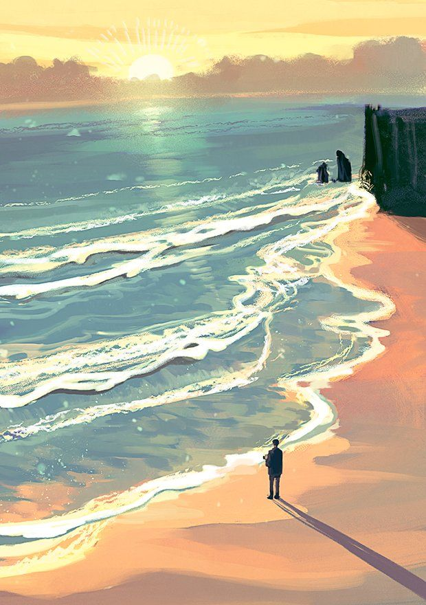

Orilla del mar
Nos paramos a la par del mar
Hay una gran posibilidad de que al
entrar al agua podamos llegar a otra
parte
Pdemos entrar al agua o
podemos regresar a la playa
a buscar otro camino
¿Qué harás?
Entrar al agua

Regresar